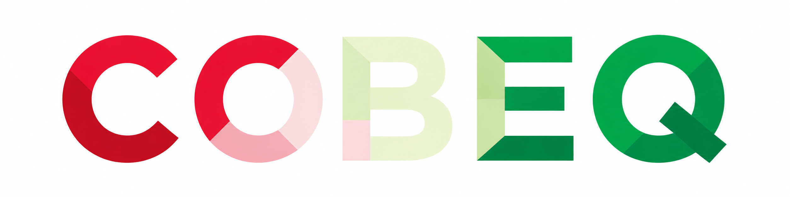
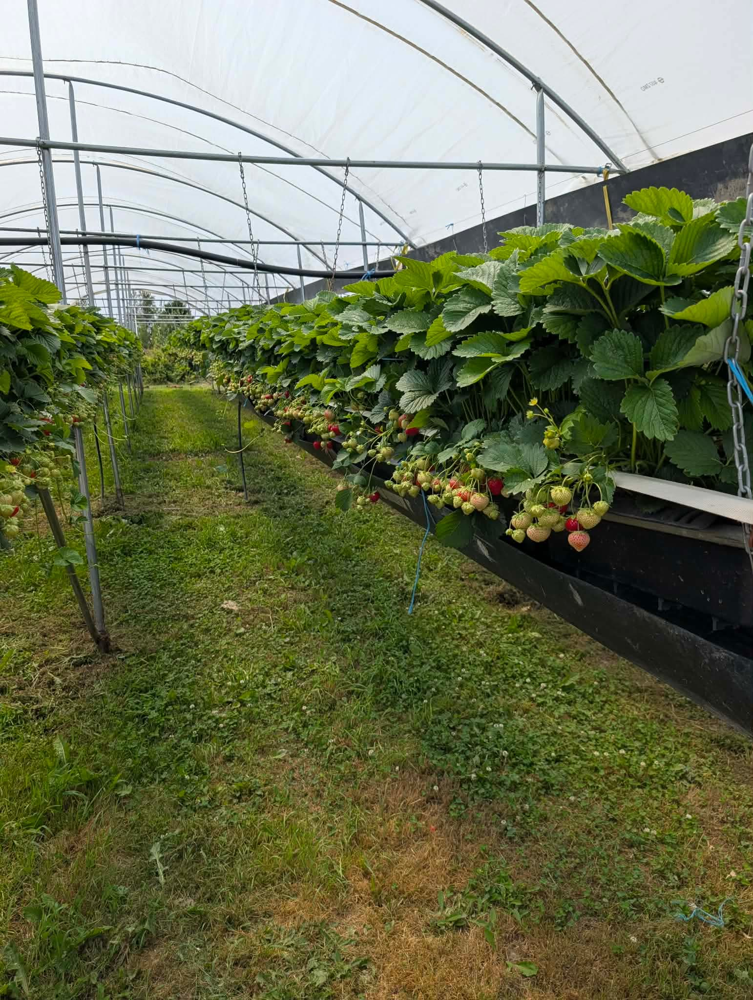
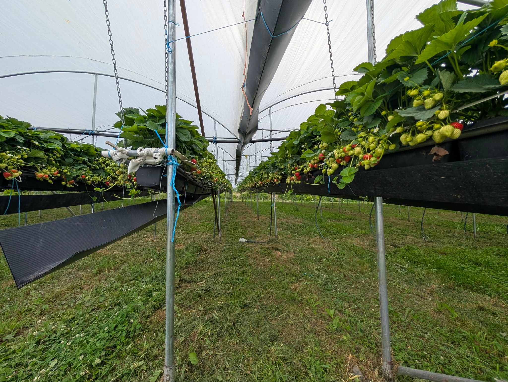
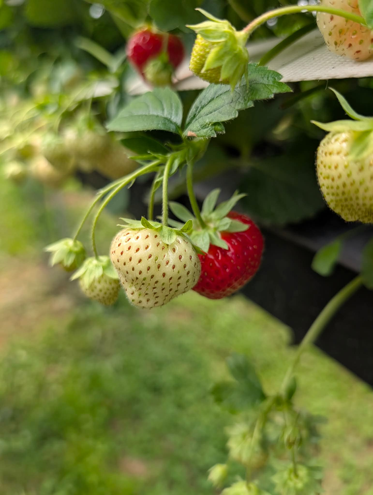
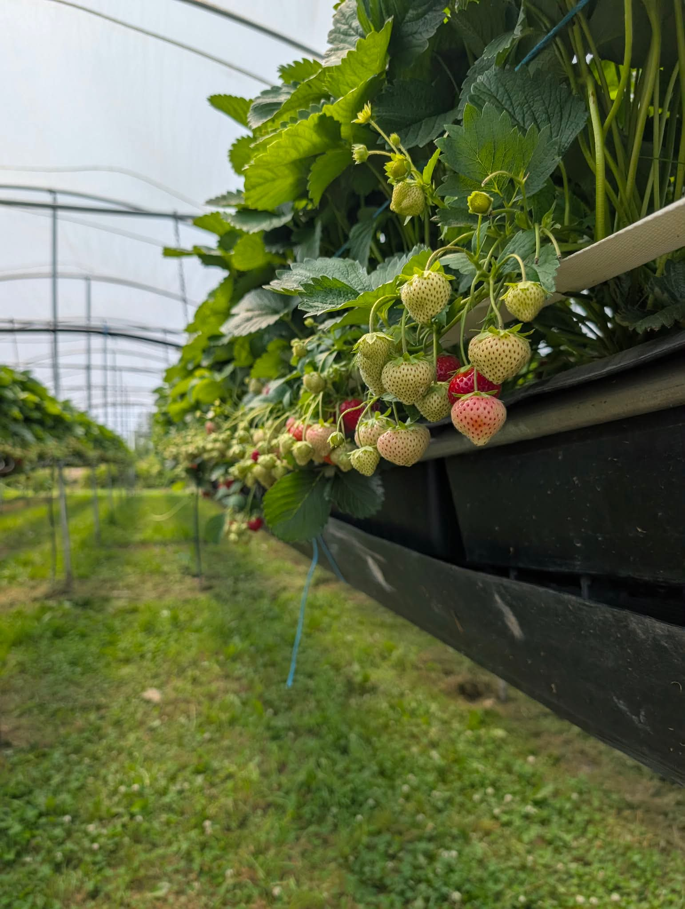
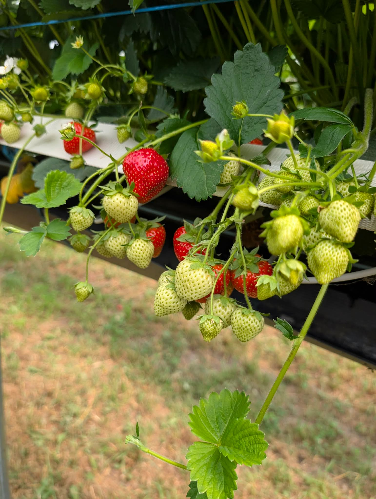
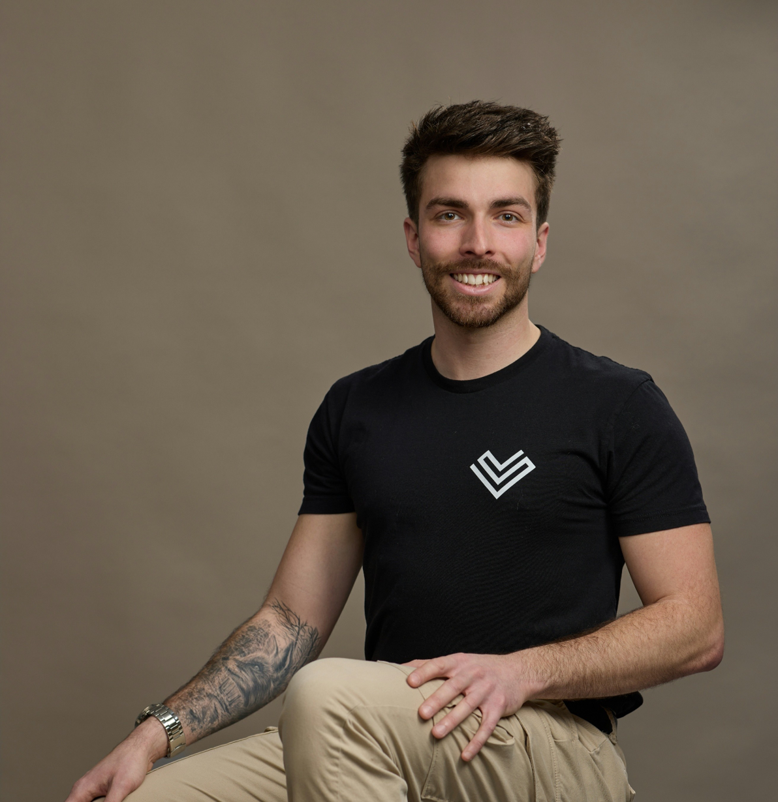
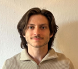
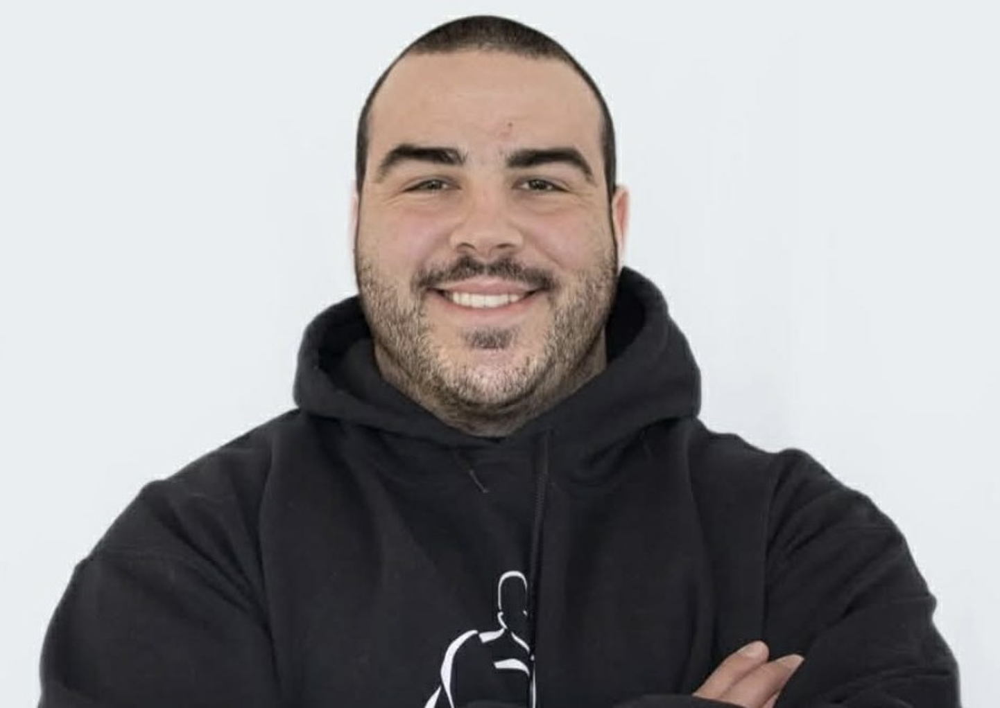
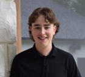

Taux de succès
Valider une cueillette automatique où la préhension et la séparation du fruit se font sans l’endommager ni l’oublier.

PMC en génieModule robotisé de cueillette de fraises
COBEQ développe un module robotisé dédié à la cueillette de fraises de production en serre et en culture hors-sol.
L’objectif: Cœur du projet, le RENDEMENT. Récolter plus efficacement, sans abîmer les fruits.
Université de Sherbrooke
Le PMC COBEQ, soit le Projet majeur de conception en génie, s’inscrit dans le parcours du baccalauréat en génie de la Promotion 69 de l’Université de Sherbrooke. Dans ce projet, l’équipe développe une solution ciblée pour les producteurs: augmenter la cadence de récolte tout en manipulant les fraises avec soin.
Le projet en clair
Le client visé est le producteur de fraises qui doit cueillir beaucoup, vite et au bon moment. Le projet isole le cycle de cueillette pour développer un module duplicable: approcher la fraise, détacher le fruit, le manipuler doucement et le déposer, avec une cadence comparable à une référence humaine.
Culture cible
Le module COBEQ vise les cultures en gouttières hors-sol utilisées en production, en serre ou sous tunnel. Ces installations offrent une géométrie plus stable qu’un champ ouvert, mais la cueillette reste complexe: le fruit est fragile, le feuillage masque l’accès et le rendement dépend du temps de cycle.





Objectifs du projet
Le livrable visé est un démonstrateur de cueillette à trois préhenseurs, conçu, fabriqué, intégré et validé sur un banc d’essai représentatif d’une culture de fraises hors-sol en serre. À partir de la position connue d’une fraise cible, le prototype doit exécuter un cycle complet: approche, coupe du pédoncule, soutien, transfert, dépôt et emmagasinage dans un bac. La vision et la sélection des fruits ne font pas partie du mandat; la validation porte d’abord sur le rendement, le taux de succès et les dommages visibles.
Valider une cueillette automatique où la préhension et la séparation du fruit se font sans l’endommager ni l’oublier.
Atteindre une cadence comparable à celle d’un cueilleur moyen avec le démonstrateur à trois préhenseurs.
Limiter les dommages causés par la manipulation afin que la performance reste pertinente pour un producteur.
Démontrer au minimum un cycle valide aux 15 secondes par préhenseur pour prouver la faisabilité.
Périmètre de validation
Les producteurs de fraises hors-sol, en serre ou sous tunnel, surtout les grandes exploitations où la récolte demande beaucoup de main-d’œuvre. Le besoin est concentré: au Québec, 10 % des fermes de plus de 10 hectares représentent 59 % de la superficie de récolte.
Améliorer la rentabilité, la régularité et la prévisibilité de la récolte sans complexifier les opérations des producteurs.
Le marché canadien représente environ 1 G$ au détail et 250,1 M$ en valeur à la ferme. La récolte pèse à elle seule 68,7 - 96,2 M$ par an.
Une première génération capable de déplacer 10 à 30 % de la main-d’œuvre de récolte représente une valeur adressable estimée à 6,9 - 28,9 M$ par an au Canada.
Ce que nous cherchons à faire
COBEQ développe un module dédié à la cueillette: approcher la fraise, la détacher, la manipuler doucement et la déposer avec une cadence mesurable.
Démarche
Valider le problème terrain: coûts de récolte, rareté de main-d’œuvre, rendement et contraintes de culture hors-sol.
Définir l’architecture mécatronique: positionnement, coupe, préhension, dépôt et gestion de plusieurs préhenseurs.
Assembler le banc d’essai, les actionneurs, l’électronique et le contrôle pour exécuter un cycle complet de cueillette.
Comparer les essais à une référence humaine: cadence cible, taux de succès supérieur à 80 % et moins de 10 % de fruits endommagés.
Équipe COBEQ





Dons et commandites
COBEQ cherche des contributeurs pour franchir les étapes clés du prototype: composantes, fabrication, banc d’essai, mesures de rendement et validation du cycle de cueillette.

Un appui ponctuel aide l’équipe à financer le prototype à trois préhenseurs, les essais et les itérations de conception.
Contacter l’équipeUne contribution financière ou en nature peut soutenir les composantes, l’usinage, les essais terrain ou l’accès à des ressources de prototypage.
Proposer une commanditeUtilisation de l’appui
Chaque contribution sert à rapprocher le prototype d’une validation concrète: construire, tester, mesurer et améliorer le module.
Rails linéaires, moteurs, capteurs, contrôleurs, alimentation, câblage et autres éléments nécessaires à l’intégration.
Reproduction d’une culture de fraises hors-sol ou en serre, déplacements, visites terrain, transport et matériel d’essai.
Mesures de cadence, répétabilité, taux de succès, fruits endommagés et itérations de conception.
Partenariat
Les détails de visibilité sont établis avec le partenaire selon la contribution, les contraintes du projet et les règles applicables au PMC.
Invitation à venir
En novembre 2027, l’équipe souhaite présenter le démonstrateur et les résultats de cueillette lors de la MégaGÉNIALE.
Visiter le site officiel